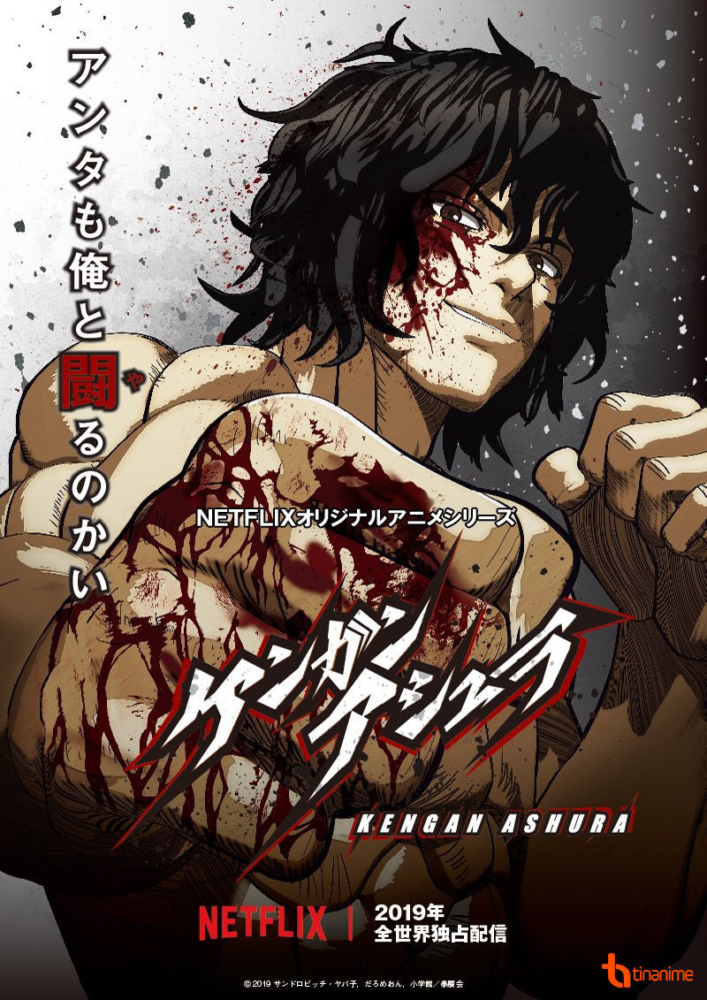
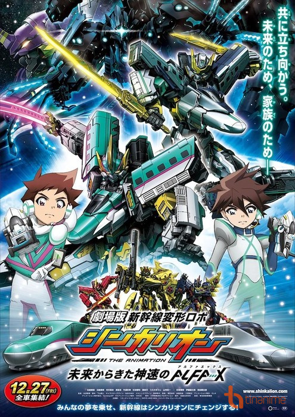
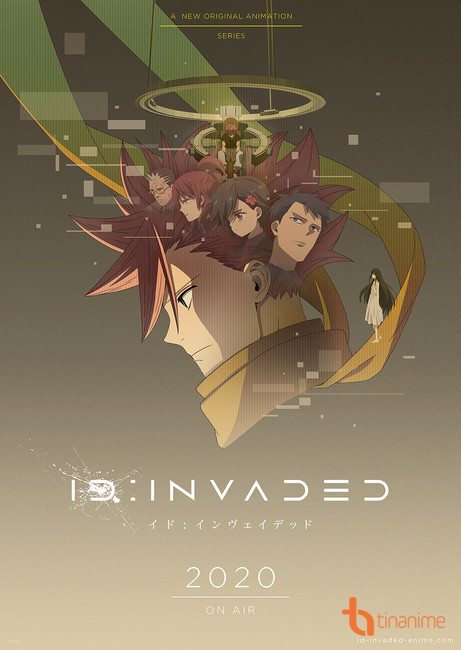

KENGAN ASHURA CHÀO ĐÓN PHẦN 2 VỚI 14 NHÂN VẬT MỚI!
Mới đây, trang web chính thức của bộ anime trực tuyến Kengan Ashura được chuyển thể từ manga cùng tên của tác giả Yabako Sandrovich đã công bố thêm 14 diễn viên mới sẽ tham gia vào phần thứ hai của bộ phim. Anime sẽ được phát hành trên Netflix vào ngày 31 tháng 10 sắp tới.

Nội dung
Các thương nhân và những nhà buôn thường đánh cược một số tiền khổng lồ để thuê những tay đấu sĩ tham gia vào những trận đánh tay không. Những trận đấu Kengan này đã tồn tại trong suốt thời Edo và kẻ thắng cuộc trong trận chiến này sẽ giành được tất cả. Những tay thương nhân thường dùng những trận đấu này để giải quyết tranh luận, đàm phán giữa hai bên.
Ouma Tokita - một đấu sĩ dũng mãnh và bí ẩn - với nickname là Ashura, anh tiến bước vào những trận đấu một mất một còn này. Chủ tịch tập đoàn Nogi - Hideki Nogi - đã ẩn danh mình và đến gặp Ashura. Đấu trường tại những trận Kengan này bắt đầu dậy sóng khi Ashura xuất trận.
SHINKALION FILM - CÂU CHUYỆN VỀ NHÀ TIÊN PHONG!
Takara Tomy mới đây, đã đăng tải trailer chính thức cho anime movie Gekijō-ban Shinkansen Henkei Robo Shinkalion: Mirai Kara Shinsoku no ALFA-X (Shinkansen-Transforming Robot Shinkalion the Movie: The Mythically Fast ALFA-X That Came From Future), bộ phim sẽ được dựa trên đồ chơi Shinkalion. Video cũng đã giới thiệu ca khúc chủ đề "Gattan Gotton Go!" sẽ do BOYS AND MEN trình bày.

Nội dung
Trong bản anime truyền hình, Hayato Hayasugi (tên cuối của cậu là một cách chơi chữ của từ "quá nhanh") và những đứa trẻ khác đóng vai trò là những phi công tiên phong điều khiển Shinkalion. Những đứa trẻ sẽ phải làm việc cùng những người lớn trong "Viện tiến hóa siêu tốc Shinkansen" (SUEI) để đánh bại con quái vật trông giống như một con tàu đạn đen.
ID: INVADED - SỨ MỆNH ĐIỀU TRA NHỮNG CÁI CHẾT!
Mới đây, trang web chính thức cho dự án anime truyền hình gốc ID: INVADED đã công bố ca khúc chủ đề "Other Side" sẽ do nhạc sĩ kiêm ca sĩ MIYAVI trình bày. Đồng thời, trang web cũng đã công bố kèm theo visual mới cho dự án. Bộ anime sẽ được phát sóng trong năm 2020.
